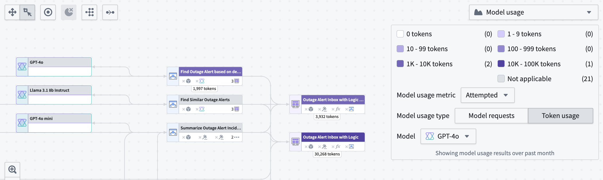
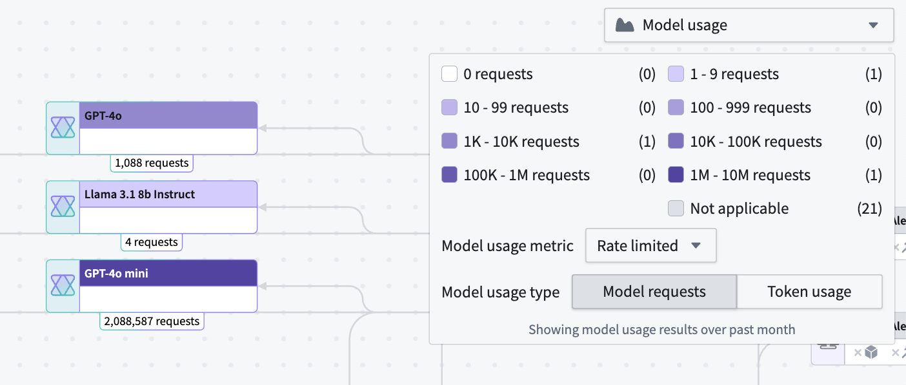
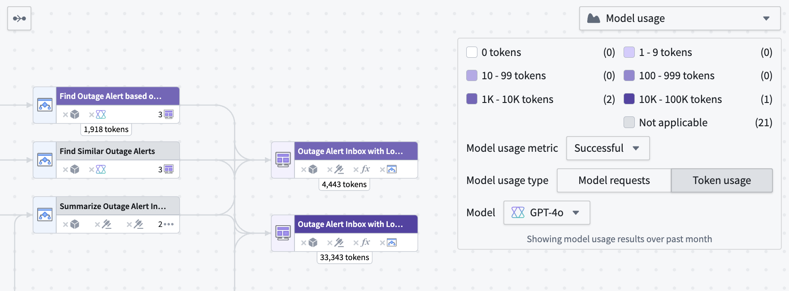
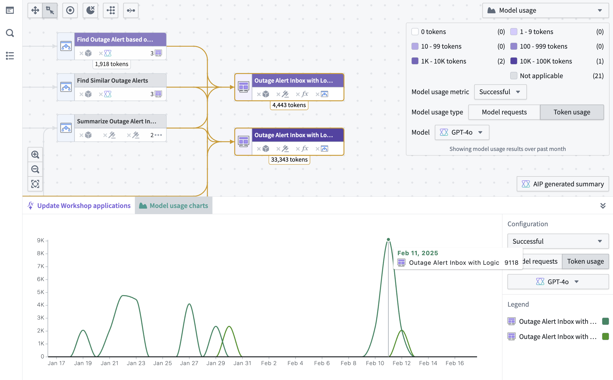

:::callout{theme="neutral"} The application previously known as Workflow Builder is now called Workflow Lineage. :::
To start using Workflow Lineage, open a Workshop application or functions repository and use the keyboard shortcut Cmd+I (macOS) or Ctrl+I (Windows) to view the relevant Workflow Lineage graph depicting the objects, actions, and functions that back the application.
The following sections will help you understand the various AIP usage metrics viewable in Workflow Lineage.

Workflow Lineage allows you to view model metrics for model requests and token usage. There are three types of model usage metrics:
Under Model usage, specify whether you want to view Model requests or Token usage metrics.
Model requests shows the total number of specified requests on model nodes in your Workflow Lineage.

Token usage shows the number of tokens used for Workshop applications, Automations, or third-party OSDK applications. Token counts on Logic nodes are the token counts used in the Logic application debugger.

You can view the token usage or model requests over time for Workshop applications, Automations, and third-party applications (Ontology SDK applications) over time in a line chart by selecting the nodes and opening the Model usage charts panel at the bottom.

To view the specific value for a particular resource, hover over the graph itself. The same filters that are used in the color legend explained above also appear in the charts panel.
Select a Logic function node, then open Function metrics at the bottom of the screen to view:
Select Workshop nodes on the graph, then open Weekly views in the bottom panel to view total or unique views for the selected Workshop modules.
The panel displays each Workshop module by week in a clustered bar chart for the past four weeks.
Workflow Lineage provides observability features to help you monitor and debug your AIP workflows. You can track execution history, visualize distributed traces, access detailed logs, and analyze performance metrics for your functions, actions, language models, and automations.